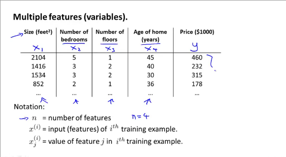
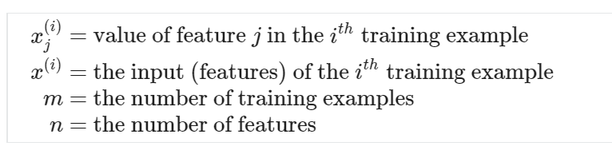
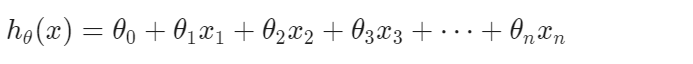
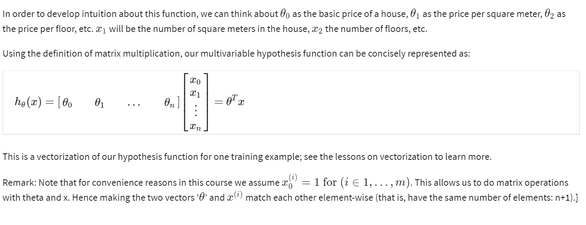

Multiple features (variables)

Linear REgression with multiple variables is also known as "Multivariate linear regression".
We now introduce notation for equations where we can have any number of input variables.

The multivariate form of the hypothesis function accommodating these mulitple features is as follows:

